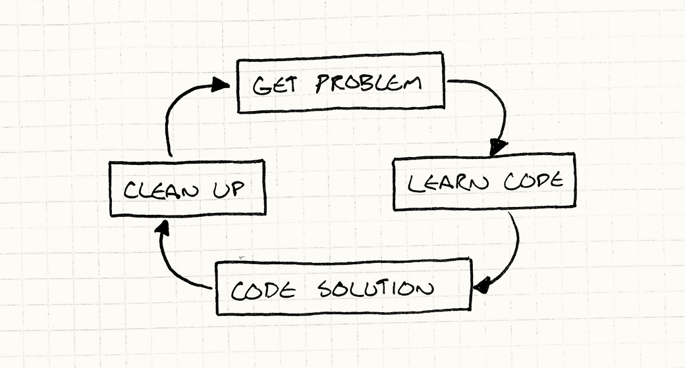

Architecture, Performance, and Games
Game Programming PatternsIntroduction
Before we plunge headfirst into a pile of patterns, I thought it might help to give you some context about how I think about software architecture and how it applies to games. It may help you understand the rest of this book better. If nothing else, when you get dragged into an argument about how terrible (or awesome) design patterns and software architecture are, it will give you some ammo to use.
What is Software Architecture?
If you read this book cover to cover, you won’t come away knowing the linear algebra behind 3D graphics or the calculus behind game physics. It won’t show you how to alpha-beta prune your AI’s search tree or simulate a room’s reverberation in your audio playback.
Instead, this book is about the code between all of that. It’s less about
writing code
than it is about organizing it. Every program has some organization, even if
it’s just “jam the whole thing into main() and see what happens”, so I think
it’s more interesting to talk about what makes for good organization. How do
we tell a good architecture from a bad one?
I’ve been mulling over this question for about five years. Of course, like you, I have an intuition about good design. We’ve all suffered through codebases so bad, the best you could hope to do for them is take them out back and put them out of their misery.
A lucky few have had the opposite experience, a chance to work with beautifully designed code. The kind of codebase that feels like a perfectly appointed luxury hotel festooned with concierges waiting eagerly on your every whim. What’s the difference between the two?
What is good software architecture?
For me, good design means that when I make a change, it’s as if the entire program was crafted in anticipation of it. I can solve a task with just a few choice function calls that slot in perfectly, leaving not the slightest ripple on the placid surface of the code.
That sounds pretty, but it’s not exactly actionable. “Just write your code so that changes don’t disturb its placid surface.” Right.
Let me break that down a bit. The first key piece is that architecture is about change. Someone has to be modifying the codebase. If no one is touching the code — whether because it’s perfect and complete or so wretched no one will sully their text editor with it — its design is irrelevant. The measure of a design is how easily it accommodates changes. With no changes, it’s a runner who never leaves the starting line.
How do you make a change?
Before you can change the code to add a new feature, to fix a bug, or for whatever reason caused you to fire up your editor, you have to understand what the existing code is doing. You don’t have to know the whole program, of course, but you need to load all of the relevant pieces of it into your primate brain.
We tend to gloss over this step, but it’s often the most time-consuming part of programming. If you think paging some data from disk into RAM is slow, try paging it into a simian cerebrum over a pair of optical nerves.
Once you’ve got all the right context into your wetware, you think for a bit and figure out your solution. There can be a lot of back and forth here, but often this is relatively straightforward. Once you understand the problem and the parts of the code it touches, the actual coding is sometimes trivial.
You beat your meaty fingers on the keyboard for a while until the right colored lights blink on screen and you’re done, right? Not just yet! Before you write tests and send it off for code review, you often have some cleanup to do.
You jammed a bit more code into your game, but you don’t want the next person to come along to trip over the wrinkles you left throughout the source. Unless the change is minor, there’s usually a bit of reorganization to do to make your new code integrate seamlessly with the rest of the program. If you do it right, the next person to come along won’t be able to tell when any line of code was written.
In short, the flow chart for programming is something like:

How can decoupling help?
While it isn’t obvious, I think much of software architecture is about that learning phase. Loading code into neurons is so painfully slow that it pays to find strategies to reduce the volume of it. This book has an entire section on decoupling patterns, and a large chunk of Design Patterns is about the same idea.
You can define “decoupling” a bunch of ways, but I think if two pieces of code are coupled, it means you can’t understand one without understanding the other. If you de-couple them, you can reason about either side independently. That’s great because if only one of those pieces is relevant to your problem, you just need to load it into your monkey brain and not the other half too.
To me, this is a key goal of software architecture: minimize the amount of knowledge you need to have in-cranium before you can make progress.
The later stages come into play too, of course. Another definition of decoupling is that a change to one piece of code doesn’t necessitate a change to another. We obviously need to change something, but the less coupling we have, the less that change ripples throughout the rest of the game.
At What Cost?
This sounds great, right? Decouple everything and you’ll be able to code like the wind. Each change will mean touching only one or two select methods, and you can dance across the surface of the codebase leaving nary a shadow.
This feeling is exactly why people get excited about abstraction, modularity, design patterns, and software architecture. A well-architected program really is a joyful experience to work in, and everyone loves being more productive. Good architecture makes a huge difference in productivity. It’s hard to overstate how profound an effect it can have.
But, like all things in life, it doesn’t come free. Good architecture takes real effort and discipline. Every time you make a change or implement a feature, you have to work hard to integrate it gracefully into the rest of the program. You have to take great care to both organize the code well and keep it organized throughout the thousands of little changes that make up a development cycle.
You have to think about which parts of the program should be decoupled and introduce abstractions at those points. Likewise, you have to determine where extensibility should be engineered in so future changes are easier to make.
People get really excited about this. They envision future developers (or just their future self) stepping into the codebase and finding it open-ended, powerful, and just beckoning to be extended. They imagine The One Game Engine To Rule Them All.
But this is where it starts to get tricky. Whenever you add a layer of abstraction or a place where extensibility is supported, you’re speculating that you will need that flexibility later. You’re adding code and complexity to your game that takes time to develop, debug, and maintain.
That effort pays off if you guess right and end up touching that code later. But predicting the future is hard, and when that modularity doesn’t end up being helpful, it quickly becomes actively harmful. After all, it is more code you have to deal with.
When people get overzealous about this, you get a codebase whose architecture has spiraled out of control. You’ve got interfaces and abstractions everywhere. Plug-in systems, abstract base classes, virtual methods galore, and all sorts of extension points.
It takes you forever to trace through all of that scaffolding to find some real code that does something. When you need to make a change, sure, there’s probably an interface there to help, but good luck finding it. In theory, all of this decoupling means you have less code to understand before you can extend it, but the layers of abstraction themselves end up filling your mental scratch disk.
Codebases like this are what turn people against software architecture, and design patterns in particular. It’s easy to get so wrapped up in the code itself that you lose sight of the fact that you’re trying to ship a game. The siren song of extensibility sucks in countless developers who spend years working on an “engine” without ever figuring out what it’s an engine for.
Performance and Speed
There’s another critique of software architecture and abstraction that you hear sometimes, especially in game development: that it hurts your game’s performance. Many patterns that make your code more flexible rely on virtual dispatch, interfaces, pointers, messages, and other mechanisms that all have at least some runtime cost.
There’s a reason for this. A lot of software architecture is about making your program more flexible. It’s about making it take less effort to change it. That means encoding fewer assumptions in the program. You use interfaces so that your code works with any class that implements it instead of just the one that does today. You use observers and messaging to let two parts of the game talk to each other so that tomorrow, it can easily be three or four.
But performance is all about assumptions. The practice of optimization thrives on concrete limitations. Can we safely assume we’ll never have more than 256 enemies? Great, we can pack an ID into a single byte. Will we only call a method on one concrete type here? Good, we can statically dispatch or inline it. Are all of the entities going to be the same class? Great, we can make a nice contiguous array of them.
This doesn’t mean flexibility is bad, though! It lets us change our game quickly, and development speed is absolutely vital for getting to a fun experience. No one, not even Will Wright, can come up with a balanced game design on paper. It demands iteration and experimentation.
The faster you can try out ideas and see how they feel, the more you can try and the more likely you are to find something great. Even after you’ve found the right mechanics, you need plenty of time for tuning. A tiny imbalance can wreck the fun of a game.
There’s no easy answer here. Making your program more flexible so you can prototype faster will have some performance cost. Likewise, optimizing your code will make it less flexible.
My experience, though, is that it’s easier to make a fun game fast than it is to make a fast game fun. One compromise is to keep the code flexible until the design settles down and then tear out some of the abstraction later to improve your performance.
The Good in Bad Code
That brings me to the next point which is that there’s a time and place for different styles of coding. Much of this book is about making maintainable, clean code, so my allegiance is pretty clearly to doing things the “right” way, but there’s value in slapdash code too.
Writing well-architected code takes careful thought, and that translates to time. Moreso, maintaining a good architecture over the life of a project takes a lot of effort. You have to treat your codebase like a good camper does their campsite: always try to leave it a little better than you found it.
This is good when you’re going to be living in and working on that code for a long time. But, like I mentioned earlier, game design requires a lot of experimentation and exploration. Especially early on, it’s common to write code that you know you’ll throw away.
If you just want to find out if some gameplay idea plays right at all, architecting it beautifully means burning more time before you actually get it on screen and get some feedback. If it ends up not working, that time spent making the code elegant goes to waste when you delete it.
Prototyping — slapping together code that’s just barely functional enough to answer a design question — is a perfectly legitimate programming practice. There is a very large caveat, though. If you write throwaway code, you must ensure you’re able to throw it away. I’ve seen bad managers play this game time and time again:
Boss: “Hey, we’ve got this idea that we want to try out. Just a prototype, so don’t feel you need to do it right. How quickly can you slap something together?”
Dev: “Well, if I cut lots of corners, don’t test it, don’t document it, and it has tons of bugs, I can give you some temp code in a few days.”
Boss: “Great!”
A few days pass…
Boss: “Hey, that prototype is great. Can you just spend a few hours cleaning it up a bit now and we’ll call it the real thing?”
You need to make sure the people using the throwaway code understand that even though it kind of looks like it works, it cannot be maintained and must be rewritten. If there’s a chance you’ll end up having to keep it around, you may have to defensively write it well.
Striking a Balance
We have a few forces in play:
- We want nice architecture so the code is easier to understand over the lifetime of the project.
- We want fast runtime performance.
- We want to get today’s features done quickly.
These goals are at least partially in opposition. Good architecture improves productivity over the long term, but maintaining it means every change requires a little more effort to keep things clean.
The implementation that’s quickest to write is rarely the quickest to run. Instead, optimization takes significant engineering time. Once it’s done, it tends to calcify the codebase: highly optimized code is inflexible and very difficult to change.
There’s always pressure to get today’s work done today and worry about everything else tomorrow. But if we cram in features as quickly as we can, our codebase will become a mess of hacks, bugs, and inconsistencies that saps our future productivity.
There’s no simple answer here, just trade-offs. From the email I get, this disheartens a lot of people. Especially for novices who just want to make a game, it’s intimidating to hear, “There is no right answer, just different flavors of wrong.”
But, to me, this is exciting! Look at any field that people dedicate careers to mastering, and in the center you will always find a set of intertwined constraints. After all, if there was an easy answer, everyone would just do that. A field you can master in a week is ultimately boring. You don’t hear of someone’s distinguished career in ditch digging.
To me, this has much in common with games themselves. A game like chess can never be mastered because all of the pieces are so perfectly balanced against one another. This means you can spend your life exploring the vast space of viable strategies. A poorly designed game collapses to the one winning tactic played over and over until you get bored and quit.
Simplicity
Lately, I feel like if there is any method that eases these constraints, it’s simplicity. In my code today, I try very hard to write the cleanest, most direct solution to the problem. The kind of code where after you read it, you understand exactly what it does and can’t imagine any other possible solution.
I aim to get the data structures and algorithms right (in about that order) and then go from there. I find if I can keep things simple, there’s less code overall. That means less code to load into my head in order to change it.
It often runs fast because there’s simply not as much overhead and not much code to execute. (This certainly isn’t always the case though. You can pack a lot of looping and recursion in a tiny amount of code.)
However, note that I’m not saying simple code takes less time to write. You’d think it would since you end up with less total code, but a good solution isn’t an accretion of code, it’s a distillation of it.
We’re rarely presented with an elegant problem. Instead, it’s a pile of use cases. You want the X to do Y when Z, but W when A, and so on. In other words, a long list of different example behaviors.
The solution that takes the least mental effort is to just code up those use cases one at a time. If you look at novice programmers, that’s what they often do: they churn out reams of conditional logic for each case that popped into their head.
But there’s nothing elegant in that, and code in that style tends to fall over when presented with input even slightly different than the examples the coder considered. When we think of elegant solutions, what we often have in mind is a general one: a small bit of logic that still correctly covers a large space of use cases.
Finding that is a bit like pattern matching or solving a puzzle. It takes effort to see through the scattering of example use cases to find the hidden order underlying them all. It’s a great feeling when you pull it off.
Get On With It, Already
Almost everyone skips the introductory chapters, so I congratulate you on making it this far. I don’t have much in return for your patience, but I’ll offer up a few bits of advice that I hope may be useful to you:
-
Abstraction and decoupling make evolving your program faster and easier, but don’t waste time doing them unless you’re confident the code in question needs that flexibility.
-
Think about and design for performance throughout your development cycle, but put off the low-level, nitty-gritty optimizations that lock assumptions into your code until as late as possible.
-
Move quickly to explore your game’s design space, but don’t go so fast that you leave a mess behind you. You’ll have to live with it, after all.
-
If you are going to ditch code, don’t waste time making it pretty. Rock stars trash hotel rooms because they know they’re going to check out the next day.
-
But, most of all, if you want to make something fun, have fun making it.